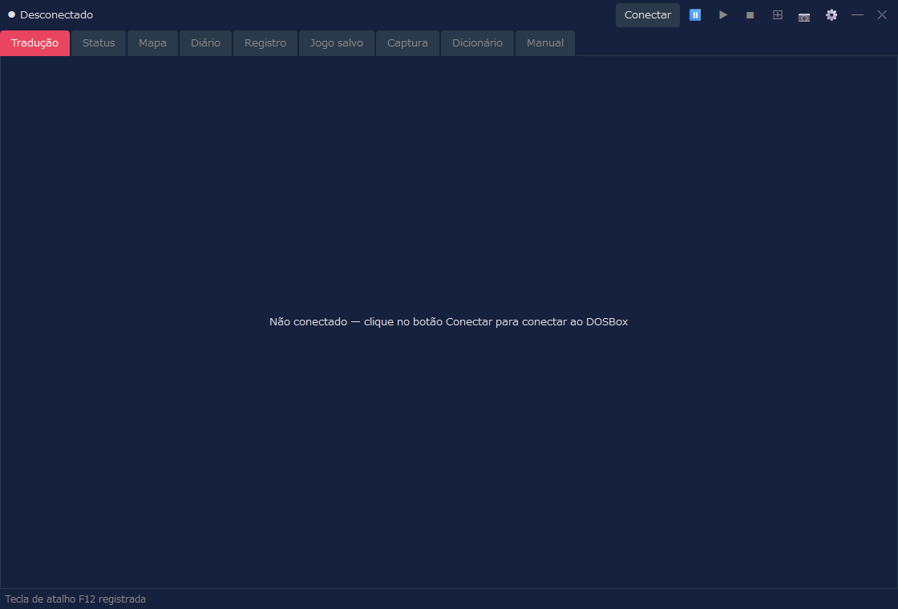
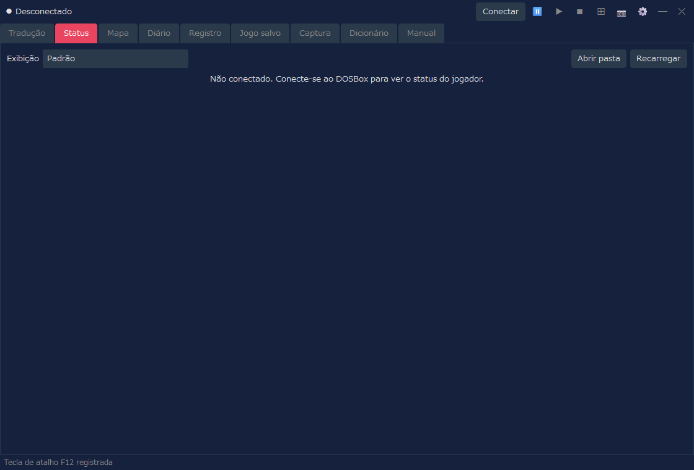
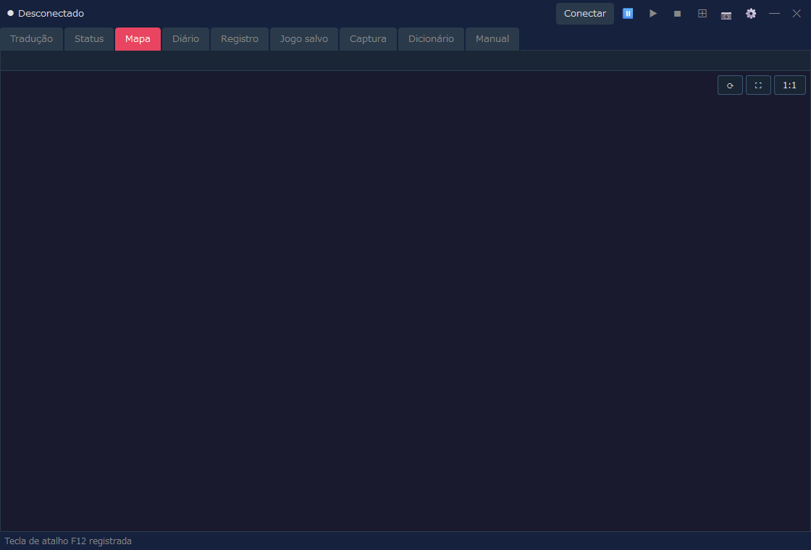
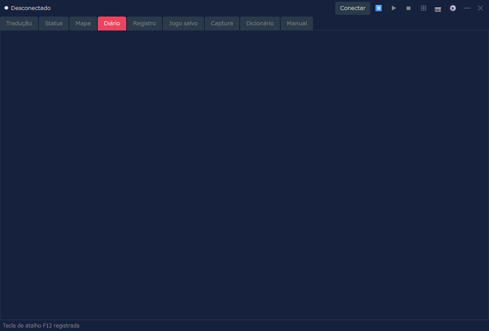
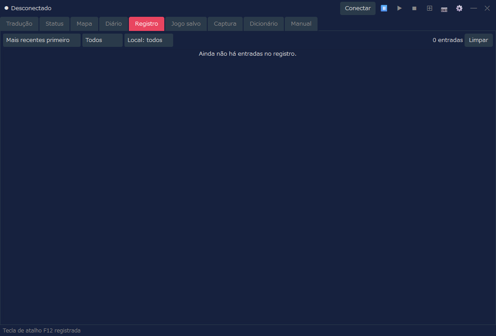
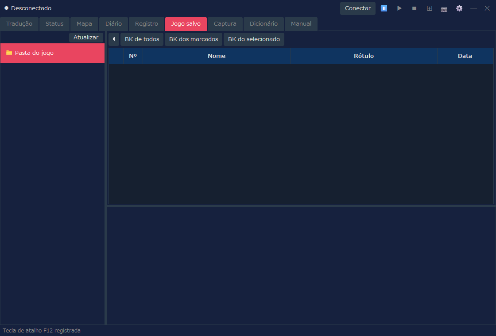
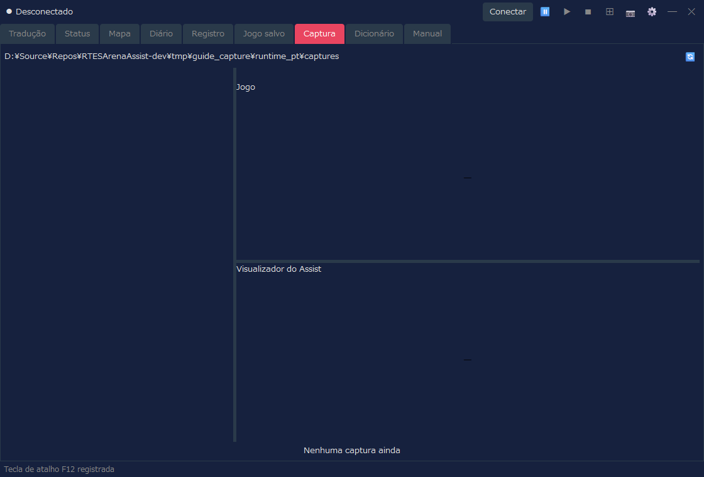
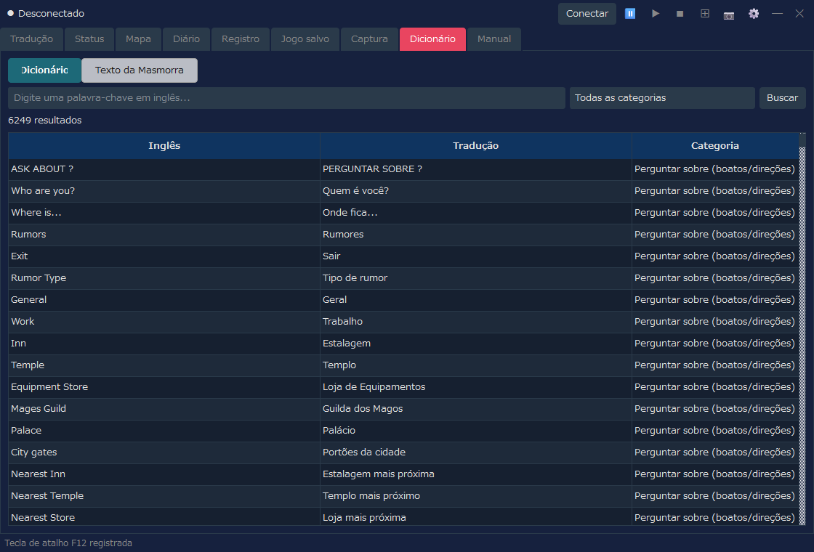
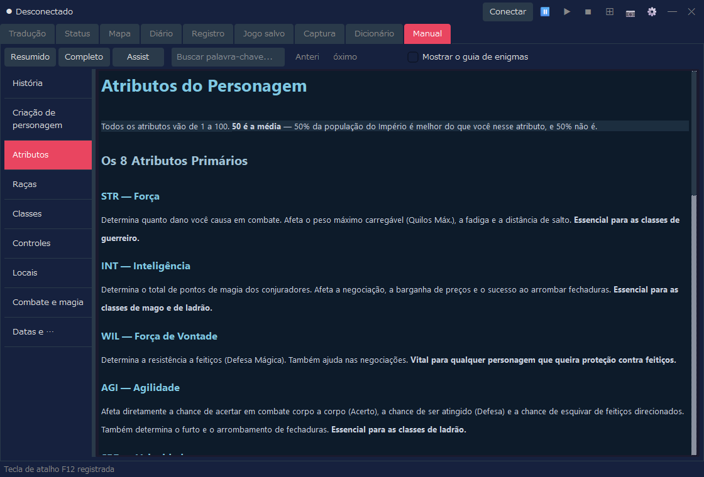
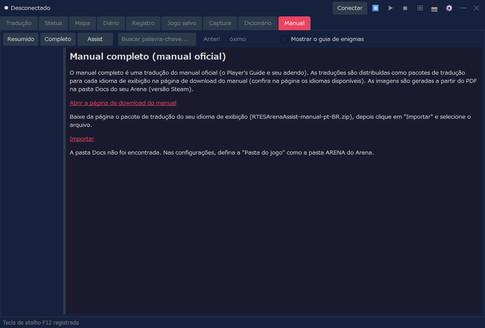

O RTESArenaAssist é um aplicativo que ajuda você enquanto joga The Elder Scrolls: Arena. Ele exibe, ao lado do jogo, traduções, mapas, o diário, registros, o gerenciamento de jogos salvos, a captura de telas, um dicionário e o manual.
As imagens foram feitas com o Assist no seu idioma de exibição, com o tema "Escuro", as configurações padrão e sem conexão. Enquanto o Assist está conectado, a exibição muda conforme a tela atual do Arena e o estado do jogo.
O modo básico de usar o Assist é iniciar o Arena, conectar o Assist e clicar no botão ⊞ para entrar no modo de layout e jogar. No modo de layout, você pode alinhar em uma só tela a imagem do jogo no DOSBox e as abas de tradução, mapa e outras do Assist, para consultá-las sem alternar com Alt+Tab.
Para os detalhes das configurações, consulte a página "Janela de configurações" deste manual.
A versão pública não inclui os dados de texto originais do Arena. Na primeira execução, o Assist cria os arquivos de tradução a partir da pasta do Arena no seu computador.
Primeiro, escolha o idioma de exibição do Assist. O idioma escolhido passa a valer imediatamente nesta tela.
| Controle | Descrição |
|---|---|
| Lista de idiomas | Escolhe o idioma da interface do Assist. Esta tela oferece apenas japonês, English e Español. Para os outros idiomas, escolha-os depois da inicialização, em "Idioma" na aba "Geral" da janela de configurações. |
| Avançar | Segue para a indicação da pasta do Arena. |
Se você continuar com o Arena em execução, o Assist detecta automaticamente o local de instalação a partir do Arena em execução. Se não for possível detectá-lo, indique a pasta de dados do Arena com Abrir….

| Item | Descrição |
|---|---|
| Pasta de instalação do jogo | Indique a pasta ARENA do Arena. |
| Abrir… | Indica a pasta do Arena por meio de uma janela de seleção de pasta. |
| Verificar novamente | Detecta de novo o Arena em execução. |
| Criar arquivos de tradução | Quando uma pasta válida do Arena é encontrada, segue para a criação dos arquivos de tradução. |
O Assist cria seus arquivos de tradução a partir dos dados da pasta do Arena. Quando termina, a janela principal é aberta.

Durante a criação, são exibidos uma barra de progresso e a etapa atual. Os dados também são lidos do Arena em execução, portanto não feche o Arena até o fim do processo.
O Assist tem a barra de conexão na parte superior, a área de abas no meio e a barra de status na parte inferior.
O Assist fica desconectado logo após a inicialização. Com o Arena / DOSBox em execução, clique no botão Conectar no canto superior direito.

| Área | Descrição |
|---|---|
| Estado da conexão | Mostra Desconectado ou, durante a conexão, o nome da tela reconhecida, o nome da IMG e assim por diante. |
| Conectar / Desconectar | Conecta ao Arena dentro do DOSBox ou desconecta. |
⏸ / ▶ / ■ | Pausa / retoma / interrompe a leitura em voz alta. A leitura em voz alta fica disponível depois que você a ativa na aba "Leitura em voz alta" da janela de configurações (ela vem DESATIVADA por padrão). |
⊞ | Alterna o modo de layout. Clique com o botão direito para abrir o menu de layout. |
📷 | Salva uma captura de tela. No modo de layout, o layout inteiro é salvo como uma única imagem. Enquanto a tela do jogo (DOSBox) está em foco, a tecla de atalho (F12 por padrão) salva da mesma forma. |
⚙ | Abre a janela de configurações. |
A mensagem "Tecla de atalho F12 registrada", exibida na barra de status logo após a inicialização, indica que a tecla de atalho de captura está pronta para uso. Você pode mudar a tecla na aba "Geral" da janela de configurações.
Depois de conectado, o nome da tela reconhecida aparece na extremidade esquerda da barra de conexão. O exemplo abaixo mostra uma conexão com a tela de título do Arena.

O nome da IMG usada por essa tela também aparece à direita do nome da tela (ele não aparece em telas que não usam IMG, como a tela de título). Na aba "Exibição" da janela de configurações, você pode escolher se quer mostrar o nome da tela e o nome da IMG.
O Assist foi projetado para ser usado no modo de layout. As abas funcionam também em uma janela normal, mas no modo de layout você pode fixar em uma só tela a imagem do jogo, a tradução, o mapa, o registro e mais, e consultá-los em conjunto.
No layout padrão, a imagem do jogo no DOSBox fica à esquerda, as abas principais do Assist ficam à direita e o painel complementar fica na parte inferior. Durante o jogo, você pode consultar o mapa ou o diário à direita e conferir a tradução da tela atual no painel inferior ou na aba Tradução.
| Ação | Descrição |
|---|---|
Clique com o botão esquerdo em ⊞ | Inicia / encerra o modo de layout. |
Clique com o botão direito em ⊞ | Permite escolher a forma de disposição, o canto de posicionamento, o modo de acompanhamento, reorganizar, manter sempre no topo e mais. |
📷 | No modo de layout, salva o layout inteiro, incluindo o DOSBox e o Assist, como uma única imagem. |
Desconectar | Desconecta do Arena. É mais fácil organizar a tela se você encerrar o modo de layout antes de desconectar. |
A captura de tela de cada aba serve para mostrar como a tela é organizada. Durante a conexão, a exibição é atualizada conforme a tela atual do Arena e o estado do jogo.
Esta é a aba central, que mostra a tradução da tela atual. A exibição muda conforme a situação: tela de título, criação de personagem, conversas, estabelecimentos, itens, magias e assim por diante.

| Exibição | Descrição |
|---|---|
| Tradução | Mostra a tradução da tela ou do evento atual. |
| Original | Dependendo das configurações, mostra também o texto original correspondente em inglês. |
| Visões dedicadas | Listas de classes, listas de raças, equipamentos, listas de estabelecimentos, listas de compras e assim por diante passam para uma visão dedicada e fácil de ler. |
Com a aba "Informações de combate" das configurações, você também pode mostrar informações de combate na aba Tradução. Escolha "Visões de combate e normal" ou "Visão de combate completa" e depois escolha Texto ou Medidores de inimigos. O padrão é Desligado, que mantém a exibição habitual da aba Tradução.
Esta aba mostra os atributos e a condição do personagem. Depois da criação do personagem, ou durante o jogo enquanto o Assist está conectado, as informações de status são exibidas.

| Exibição | Descrição |
|---|---|
| Exibição | Escolha "Padrão" (a exibição usada até agora) ou um dos designs (fichas de personagem). A tela de status e a distribuição de atributos na aba Tradução também usam a exibição escolhida aqui. |
| Atributos | Mostra os atributos principais, como Força e Inteligência. |
| Valores de condição | Mostra HP, fadiga, pontos de magia e assim por diante. |
| Alteração de valores | Operações como alterar atributos só estão disponíveis quando você ativou explicitamente as configurações de trapaça (na exibição "Padrão"). |
Este recurso mostra o status em um design de sua escolha. Se você escolher qualquer opção diferente de "Padrão" em "Exibição", o status é mostrado no design escolhido. Um design é um arquivo HTML (um modelo), e há 8 designs incluídos. Você também pode criar os seus. Alguns designs mostram o rosto e a imagem de corpo inteiro (incluindo o equipamento), a condição do personagem (doença, veneno, paralisia e assim por diante) e a classe de armadura de cada parte do corpo (um valor calculado a partir do equipamento; quanto menor, melhor a proteção). O rosto e a imagem de corpo inteiro são criados a partir dos arquivos do seu Arena.
| Controle | Descrição |
|---|---|
| Abrir pasta | Abre a pasta das suas próprias fichas de personagem (arquivos HTML), que é character_sheets, no mesmo local de RTESArenaAssist.exe. Na primeira vez que você a abre, cópias dos designs incluídos são colocadas nela. Os arquivos que você colocar ali aparecem na lista "Exibição" com "(pasta)" acrescentado. |
| Recarregar | Recarrega as fichas de personagem da pasta. Clique depois de alterar um arquivo. |
Para a lista dos designs incluídos, o funcionamento das fichas de personagem e os valores que podem ser inseridos e como escrevê-los, consulte a página "Designs de status (fichas de personagem)" deste manual.
Esta aba mostra o automapa de masmorras, cidades, do campo, de interiores e assim por diante. A exibição é atualizada de acordo com a sua posição atual no jogo.

| Exibição | Descrição |
|---|---|
| Posição atual | Mostra o mapa e a posição atuais a partir do estado do jogo conectado. |
| Automapa | Desenha as áreas exploradas, as paredes, as entradas, o terreno do campo e assim por diante. |
| Configurações de exibição | A grade, as coordenadas dos blocos, a exibição estendida do campo e assim por diante podem ser ajustadas na janela de configurações. |
Esta aba permite ler, no seu idioma de exibição, o que está registrado no Diário de Bordo do jogo.

| Exibição | Descrição |
|---|---|
| Data e título | Mostra a data e o resumo de cada entrada do diário. |
| Texto | Mostra o texto do Diário de Bordo no seu idioma de exibição. |
| Atualizações | Quando o diário é atualizado no jogo, a exibição do Assist também é atualizada. |
Esta aba permite rever, como um histórico, as traduções que o Assist exibiu. É útil para reler uma passagem que você perdeu.

| Controle | Descrição |
|---|---|
| Ordem | Alterna entre mais recentes primeiro e mais antigas primeiro. |
| Filtro | Restringe o registro por categoria ou local. |
| Limpar | Limpa o registro que está sendo exibido. |
Se você ativou o salvamento do registro de combate e já há algo gravado, é possível alternar entre o "Registro normal" e o "Registro de combate" dentro da aba Registro. Se não houver registro de combate, apenas o registro normal é exibido, como antes.
Esta aba gerencia os slots de jogos salvos e os backups do Arena. Ela auxilia nas operações com os dados salvos, como o backup automático feito antes de uma restauração.

| Controle | Descrição |
|---|---|
| Lista de slots | Lista os slots de jogos salvos do Arena. |
| Criar backup | Faz o backup do jogo salvo selecionado. |
| Restaurar | Restaura os dados salvos a partir de um backup. |
| Excluir | Exclui backups ou jogos salvos de que você não precisa mais. |
Esta aba permite conferir as capturas de tela salvas com o botão 📷. As imagens feitas no modo de layout também podem ser abertas aqui.

| Controle | Descrição |
|---|---|
| Lista | Mostra as capturas salvas. |
| Prévia | Permite conferir a imagem selecionada. |
| Bloquear | Protege contra exclusão as imagens que você quer manter. |
| Excluir | Exclui a imagem selecionada ou as imagens de que você não precisa mais. |
Esta aba pesquisa o dicionário de tradução do Assist e os textos das masmorras. Você pode usá-la para consultar palavras e frases que aparecem no jogo.

| Modo de exibição | Descrição |
|---|---|
| Dicionário | Pesquisa por palavra-chave em inglês, por tradução e por categoria. |
| Texto da Masmorra | Pesquisa e mostra os textos das masmorras que vêm dos arquivos INF. |
Esta aba permite ler, no seu idioma de exibição, explicações sobre a operação básica e os sistemas do Arena, além de explicações sobre os recursos do Assist. Use-a quando quiser conferir controles ou termos durante o jogo.

| Controle | Descrição |
|---|---|
| Resumido / Completo / Assist | Alterna o que é exibido (veja a tabela abaixo). |
| Busca por palavra-chave | Pesquisa no manual. |
| Lista à esquerda | Alterna entre capítulos como História, Criação de personagem, Controles e Combate e magia. |
| Opção | Conteúdo | Idiomas |
|---|---|---|
| Resumido | Uma explicação do jogo (9 capítulos) | 12 idiomas |
| Completo | Uma tradução do manual oficial (exibida depois de importar um pacote de tradução) | Atualmente apenas japonês |
| Assist | Uma explicação dos recursos do Assist (Operação básica, Janela de configurações, Designs de status (fichas de personagem)) | 12 idiomas |
Versão completa (uma tradução do manual oficial)
Em "Completo", você pode ler uma tradução do manual oficial (o Player's Guide e seu adendo). As traduções são distribuídas, separadamente do aplicativo principal, como um pacote de tradução para cada idioma de exibição (RTESArenaAssist-manual-<idioma>.zip) na página de download do manual (atualmente apenas em japonês). Na primeira vez que usar, importe o pacote com os passos a seguir.

As imagens do manual são criadas a partir de Player Guide.pdf, na pasta Docs do seu Arena (versão Steam). Se o PDF não for encontrado ou for de outra versão, apenas o texto é exibido. Verifique a "Pasta do jogo" nas configurações e clique em "Gerar as imagens novamente" para que as imagens também sejam exibidas. Depois da importação, você pode apagar o arquivo baixado. O próprio Assist não se conecta à internet (o download é feito no seu próprio navegador).
"Completo" também mostra um link que abre o manual oficial (um PDF em inglês) na pasta Docs. Quando o idioma de exibição é o inglês, apenas esse link é exibido, no lugar de um pacote de tradução.
Conectar, no canto superior direito do Assist, para conectar ao Arena / DOSBox.⊞ para entrar no modo de layout.📷 ou com a tecla de atalho (F12 por padrão).⊞ e, se necessário, clique em Desconectar.O tamanho de exibição do modo de layout, a forma de disposição, o painel de tradução, a pasta de capturas e mais podem ser ajustados na janela de configurações. Para usar a leitura em voz alta das traduções, ative-a também na aba "Leitura em voz alta" da janela de configurações.